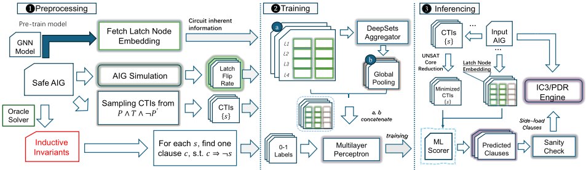
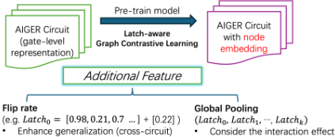
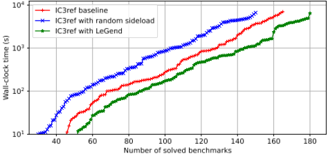

LeGend：面向硬件模型检测的数据驱动引理生成框架
论文针对硬件模型检测核心算法 IC3/PDR 中归纳泛化步骤的质量瓶颈：传统贪心启发式缺乏全局视野，而已有 ML 方法（如 DeepIC3、NeuroPDR）对每个候选子句反复建图分析，开销大且难以扩展。LeGend 提出"一次性全局表示学习"新范式：从 AIGER 网表构建整电路全局图，用自监督对比学习（GraphCL+GIN）预训练 latch 编码器，一次性生成融合信号翻转率动态特征的嵌入；推理时用轻量置换不变 DeepSets 模型对字面量打分、组装候选引理，经形式化 sanity check 后在初始化阶段 side-load 进 PDR 求解器，运行时层与求解器无关。在 HWMCC 200 个基准上，IC3ref 求解数提升 15 个至 181（PAR-2 加速 1.56×），ABC 提升 22 个至 182（加速 1.78×），SAFE 与 UNSAFE 场景均受益，而 DeepIC3/IC3-CTP 仅带来边际改善。该工作直接命中团队形式验证能力域，为协议 IP 的 safety 性质证明加速提供了可借鉴的 ML 方法学。
IC3/PDR 硬件模型检测的性能关键取决于归纳泛化（将 CTI cube 泛化为引理）步骤：传统局部贪心启发式产生的引理"短视"、导致状态空间探索低效、收敛慢；而已有 ML 引导方法采用 per-clause 图分析范式，对每个候选子句或反例重复构建并分析图，计算开销重、形成可扩展性瓶颈，且只捕捉局部电路性质、无法利用全局结构信息。此外 side-loading 本身需要精心挑选少量高质量子句，盲目注入反而拖慢求解器。
LeGend 将昂贵的图学习与快速推理解耦为三阶段流水线：(1) 预处理——用 SAT 求解器从 P∧T∧P' 采样 CTI 并做 UNSAT core 最小化，从 AIGER 门级网表（经开源 aigverse）构建整电路单一全局图；(2) 全局表示学习——设计领域定制的 GraphCL 自监督对比任务（GIN 编码器、NT-Xent 损失、模拟电路结构差异的数据增强），在 390 个电路上预训练 latch 编码器，推理时对新电路仅做一次前向得到全部 latch 嵌入，并拼接信号翻转率动态特征构成 v_l=[e_l, r_flip(l)]；(3) 子句预测与集成——用轻量置换不变 DeepSets 聚合器加 MLP 在子句上下文条件下对每个字面量打分，按阈值 θ 保留字面量组装引理，通过 initiation 与 first-step consistency 两项形式化 sanity check 后，在初始化时 side-load 进 PDR 求解器的 F1 帧；推理阶段无图卷积与消息传递，运行时层求解器无关，可最小改动接入任意 IC3/PDR 引擎。
IC3ref + LeGend 在 200 个基准上求解 181 个（较 vanilla 多 15 个），累计 PAR-2 时间从 176.32h 降至 112.69h，加速 1.56×
ABC + LeGend 求解 182 个（较基线多 22 个），PAR-2 时间从 192.15h 降至 108.23h，加速 1.78×
SAFE 证明数：IC3ref 从 128 升至 138，ABC 从 127 升至 134；UNSAFE 反例发现分别增加 5 和 15 例
对比方法 DeepIC3 与 IC3-CTP 最多在 IC3ref 上 +1、在 ABC 上 +0，PAR-2 改善仅约 1.00–1.02×，且对 UNSAFE 无一致收益
消融实验：随机 side-loading 反而劣于基线，LeGend 额外贡献 15 个证明，确认收益来自子句预测模型而非 side-loading 机制本身
训练规模：390 个 latch 数小于一千的电路图用于对比学习，产生约 1.79×10^6 个训练标签；实验平台为单张 NVIDIA RTX 3090 加双路 Intel Xeon Platinum 8375C，时限 7200 秒
相对 DeepIC3/NeuroPDR 等对每个候选子句或反例重复建图做 GNN 分析的 per-clause 范式，LeGend 的核心区别是"一次性整电路嵌入 + 大规模并行离线引理预测"：图计算只在每个电路执行一次并被所有候选子句复用，推理仅操作预计算嵌入向量、无图卷积与消息传递，开销可忽略；相比 IC3CTP 的规则式 SAT 引导启发式，它利用了电路全局结构与动态翻转特征，且无需针对求解器大量重写；同时以求解器无关的 side-loading 接口集成，可插入任意现代 IC3/PDR 引擎。
相关度级别：high
命中能力域：2.5 形式验证与等效性检查 | 2.7 EDA/验证自动化与 AI 辅助
理由：本文直接命中 2.5 域核心技术——hardware model checking / formal property checking，其加速对象 IC3/PDR 是主流 model checking 引擎的骨干算法；同时"预训练电路表示 + 轻量推理 + 求解器无关 side-loading"的架构属于 2.7 域的 AI 辅助验证自动化。团队对 LPDDR5X/HBM4/UCIe 等协议 IP 需完成协议合规与 safety 性质的形式化证明，引理质量直接决定长性质证明的收敛速度与 formal 回归吞吐，因此该工作对提升团队形式验证交付效率有直接参考价值。
建议动作：深入精读并做内部分享
arXiv:2602.24010v1 [cs.AR] 2026年2月27日
Mingkai Miao ∗ HKUST(GZ)
mmiao815@connect.hkust-gz.edu.cn
Wei Zhang HKUST
wei.zhang@ust.hk Guangyu Hu ∗
HKUST
ghuae@connect.ust.hk
Hongce Zhang
HKUST(GZ) hongcezh@hkust-gz.edu.cn
| Method | ML-aided | Circuit-aware | Portability | Overhead |
|---|---|---|---|---|
| NeuroPDR [7] | ✓ | ✓ | ✗ | Heavy |
| DeepIC3 [5] | ✓ | ✓ | ✓ | Heavy |
| IC3-CTP [8] | ✗ | ✗ | ✗ | Light |
| LeGend | ✓ | ✓ | ✓ | Light |
| Method | ML-aided | Circuit-aware | Portability | Overhead |
upon the same computationally expensive paradigm that requires repetitive, instance-specific graph processing . Specifically, NeuroPDR [7] needs to construct and analyze a new graph for each counterexample that the algorithm finds. While DeepIC3 [5] decouples generation of candidate lemmas from the PDR algorithm itself, it still needs the repeated graph analysis for each of the thousands of candidate clauses it evaluates offline. On the other hand, IC3CTP [8] relies on a lightweight, rule-based SAT-guided heuristic for improved lemmas. Although fast, it does not take good advantage of the features of circuits and would demand extensive solver-specific rewrites to port to a new PDR implementation. As summarized in Table 1 , none of these methods marries learning power with both low overhead and easy portability.
This paper presents LeGend , a framework that architects a new paradigm: one-time circuit embedding for massively parallel offline lemma prediction . Instead of analyzing countless individual clauses, LeGend shifts most of the machine learning computations to a single, upfront, and fully offline stage. It begins by constructing a global graph of the entire circuit. This step runs only once. It then computes a rich and dense vector embedding for every latch 1 , using a pretrained self-supervised contrastive learning model. This embedding captures the global structural role and local dynamic properties (such as signal flip rates) of latches.
With these pre-computed embeddings, the bottleneck of prior methods is eliminated, because LeGend no longer needs to build a graph for each of the thousands of sampled candidate clauses. Instead, a lightweight permutation-invariant model predicts the quality of a clause simply by operating on the embedding vectors of its constituent latches. This process is orders of magnitude faster than the prior per-clause graph analysis. The final set of high-quality lemmas is then side-loaded [5] into the PDR solver at initialization, providing a powerful head start to the verification process. This
1 In the literature of hardware model checking, state-holding elements are uniformly referred to as latches regardless of their circuit implementations.
寄存器传输级（RTL）设计的性质检查是形式验证中的一项核心任务。在现有引擎中，IC3/PDR 是一种被广泛使用的主干算法，其性能关键取决于归纳泛化——即将一个具体的反例到归纳（CTI）立方体泛化为引理的步骤。先前的工作已探索利用机器学习来引导这一步骤，并取得了令人鼓舞的成果，然而大多数方法采用逐子句的图分析范式：针对每个子句反复构建并分析图，带来沉重的开销并形成可扩展性瓶颈。我们提出 LeGend，它以一次性全局表示学习取代了这一范式。LeGend 预训练一个领域自适应的自监督模型，以生成能够捕捉全局电路特性的锁存器嵌入。这些预先计算的嵌入使一个轻量级模型能够以几乎可忽略的开销预测高质量引理，从而有效地将昂贵的学习与快速的推理解耦。实验表明，LeGend 在一组多样化的基准测试上加速了两个最先进的 IC3/PDR 引擎，为扩展形式验证的规模提供了一条有前景的路径。
IC3/PDR [1, 2] 是一种最先进的硬件模型检验算法。其目标是通过寻找一个安全的归纳不变量来证明安全性质 𝑃。其核心思想是构建一系列子句集合，称为帧（frame），记作 𝐹0, 𝐹1, …, 𝐹𝑘，它们是对至多 𝑘 步内可达状态的过近似（over-approximation）。𝐹0 用初始状态 𝐼 初始化，并且对所有 𝑖 ≥ 0，必须满足 𝐹𝑖 ⇒ 𝑃。如果两个相邻帧在逻辑上等价，即 𝐹𝑖 = 𝐹𝑖+1，则表明找到了一个归纳不变量。该算法的总体工作流程如算法 1 所示。主循环迭代地精化各帧。在第 𝑘 次迭代中，算法首先检查是否存在 𝑘 步内可达的状态（由 𝐹𝑘 近似表示）能够到达某个坏状态（即违反 𝑃 的状态）。如果找到这样的状态，算法便调用 BlockCube 过程（详见算法 2）将其消除。若阻塞成功，则循环继续；否则，意味着已经找到一条真实的反例轨迹，该性质被判定为 Unsafe。在确保从 𝐹𝑘 出发没有任何坏状态可达之后，算法尝试将引理传播到后续的帧（即 PropagateLemmas 函数）。如果这一步达到了不动点（𝐹𝑖 = 𝐹𝑖+1），则表明已发现归纳不变量，该性质被判定为 Safe。
IC3/PDR 的核心在于递归阻塞与泛化机制，如算法 2 所示。当给定一个需要在帧 𝑖 处阻塞的立方体（cube）𝑐 时，BlockCube 过程会检查相应的引理 ¬𝑐 相对于前一帧 𝐹𝑖−1 是否归纳成立（该函数定义在第 22-24 行）。如果不是，则意味着 𝐹𝑖−1 中存在一个可以转移到 𝑐 的前驱状态 𝑝（即归纳反例，Counterexample-To-Induction，简称 CTI [9]）。随后，算法进行递归调用，在帧 𝑖−1 处阻塞该前驱 𝑝（算法 2 中的第 5 行）。这一递归过程持续进行，直到找到一个可被阻塞的前驱，或者到达初始状态（帧 0）为止。
一旦证明立方体 𝑐 相对于某一帧是归纳的，就会调用 Generalize 过程 [2]。如算法 2 所详述，该函数通过迭代地删除文字（literal）并检查所得的更小立方体是否仍然（相对）归纳，来尝试简化该立方体。这一过程会产生一个更一般的引理，覆盖更大的不可达状态集合。最终泛化得到的引理随后被加入到一段帧区间中（算法 2 中的第 11 行），从而强化了过近似。此步骤中的文字删除可以遵循不同的策略，例如 CTG [4] 和 EXCTG [10]。这一泛化步骤的质量对算法的性能至关重要。
为提高归纳证明搜索的效率，IC3/PDR 可以借助一种称为子句侧载（clause side-loading）[5] 的技术加以增强，其形式化描述如算法 3 所示。该方法旨在通过在验证过程开始时向各帧中注入一组预先计算好的引理，来加速向不动点（fixed-point）的收敛。具体而言，在算法 3 第 6-7 行的初始化阶段（对应算法 1 中的第 1 行），只要这些子句满足帧上的约束 [1]，𝐹 1 就可以被设置为侧载的子句，而非空集（表示 ⊤）。这些子句随后将由 PropagateLemmas 函数向前传播，并最终可能成为归纳不变式的一部分。尽管看似前景可观，侧载并不总是有益的：其有效性关键取决于所注入引理的质量。
一方面，高质量的归纳子句能够显著剪枝搜索空间。早期工作已经证明，即使是从已知归纳不变式中采样得到的少量子句，也能带来显著的加速 [5]。这表明，如果存在一个预言机（oracle）能够提供完美泛化的引理，PDR 的性能将得到极大提升。
输入：一个安全性问题 ⟨ 𝐼,𝑇, 𝑃 ⟩，其中 𝐼：初始状态，𝑇：迁移关系，𝑃：待证明的安全性质
输出：Safe 或 Unsafe
1 𝐹 0 ← 𝐼 ; 𝐹 1 ←⊤ ; 𝑘 ← 1;
2 while true do
3 while 𝐹 𝑘 ∧ ¬ 𝑃 可满足（SAT）且见证为 𝑐 do
4 if not BlockCube( 𝑐 , 𝑘 ) then
5 return Unsafe ; // 找到了一条通往坏状态的路径
6 end
7 end // 向前传播引理以寻找不变式
8 if PropagateLemmas( 𝑘 ) then
9 return Safe ; // 找到了一个归纳不变式
10 end
11 𝑘 ← 𝑘 + 1; 𝐹 𝑘 ←⊤ ; // 递增帧
12 end
13 Function PropagateLemmas( 𝑘 𝑚𝑎𝑥 ) :
14 for 𝑖 = 1 → 𝑘 𝑚𝑎𝑥 - 1 do
15 foreach 引理 ¬ 𝑐 ∈ 𝐹 𝑖 \ 𝐹 𝑖 + 1 do
16 if IsRelativeInductive( 𝑐, 𝑖 ) then
17 𝐹 𝑖 + 1 ← 𝐹 𝑖 + 1 ∧ ¬ 𝑐 ;
18 end
19 end
20 end
21 if ∃ 𝑖 < 𝑘 𝑚𝑎𝑥 使得 𝐹 𝑖 = 𝐹 𝑖 + 1 then return true ;
22 else return false ;
如第 1 节所述，先前的机器学习（ML）引导的 PDR 依赖于逐子句的图分析：需要为每个候选子句或反例构建一个全新的图 [5, 7]。这种方法不仅计算开销巨大，而且在概念上存在局限，因为它只能捕获局部的电路特性，无法利用设计的全局结构上下文。
为了突破这一障碍，我们提出了 LeGend，一个建立在一次性全局表示学习范式之上、用于大规模并行引理预测的框架。如图 1 所示，LeGend 在架构上将开销高昂的基于图的学习与快速的逐子句推断解耦。这是通过一个多阶段流水线实现的，该流水线旨在同时最大化所生成引理的效率和质量。
我们首先通过从公式 𝑃 ∧ 𝑇 ∧ 𝑃′ 中采样归纳反例（Counterexamples-To-Induction, CTIs）[2]，生成一个大规模的初始候选子句池。具体而言，我们开发了一个高性能的模型采样引擎，该引擎利用最先进（SOTA）的 SAT 求解器，从而能够高效地生成互不相同的 CTIs。随后，遵循先前工作 [11] 中的标准做法，使用 UNSAT 核最小化对这些模型进行约简。所得的最小化 CTIs 为后续的归纳泛化提供了起点。训练和测试阶段均需要这一步骤。
表示学习的目标是生成一种向量表示（即嵌入，embedding），用以表示电路中每个锁存器（latch）的结构与功能信息。编码器在一个电路语料库上单独进行训练。在对新电路进行推理时，我们使用这一预训练编码器执行一次前向传播，即可获得所有锁存器的嵌入。这种针对每个电路的嵌入是求解过程中唯一基于图的计算。后续的文字（literal）与子句评分仅使用这些嵌入，而无需访问电路图。
3.2.1 从 AIGER 电路到图表示。先前的方法依赖于为每个候选子句构建一个小型的局部图 [5]。这种做法在本质上限制了模型的感受野。一个锁存器的重要性不仅由其直接邻居决定，还取决于其在整个电路中所处的位置。因此，我们的框架首先从门级 AIGER 网表 2 构建一个表示整个电路拓扑的单一整体图。这种全局视角使我们的机器学习模型能够捕获长程依赖与高阶结构信息，而这些信息是逐子句的局部分析从根本上无法获取的。
3.2.2 训练锁存器编码器。LeGend 的最终目标是为 IC3/PDR 预测潜在子句，而子句是由文字组成的无序集合。一个有效的预测模型需要为每个锁存器提供一种嵌入，该嵌入不仅编码其个体的结构重要性，还编码其与子句中其他锁存器组合在一起时的关系属性。为此，我们设计了一个自监督任务来训练编码器模型，从而在无直接监督的情况下生成这些嵌入，因为“好的”引理（lemma）并非先验已知。
2 我们利用开源的 aigverse [12] 库来解析时序 AIGER 文件并将其转换为图表示。

图 2 展示了我们为硬件模型检测问题设计的自监督对比学习任务。其核心原则是：锁存器的嵌入应当对不改变其基本功能的微小扰动保持不变，同时又足够敏感，能够将其与功能上不同的锁存器区分开来。我们通过改造图对比学习（Graph Contrastive Learning, GraphCL）框架 [13]（一种自监督预训练方法，其最大化同一电路图的两个扰动视图之间的一致性）来实例化这一原则。我们没有采用通用的增强方式，而是选择了能够模拟电路中合理结构差异的增强方式。
具体而言，对于每个锁存器（称为“锚点”，anchor），我们生成两个增强图（即“视图”，views）以构成正样本对（positive pair），同时将同一批次中的所有其他锁存器视为负样本对（negative pair）。随后，我们训练一个图同构网络（Graph Isomorphism Network, GIN）编码器 [14]，并使用 NT-Xent（归一化温度缩放交叉熵损失，normalized temperature-scaled cross entropy loss）[15] 来最大化正样本对的嵌入相似度，同时最小化负样本对的嵌入相似度：

其中 𝑧 𝑖 为锚点嵌入，𝑧 𝑝 为其正样本对，𝜏 为温度超参数。我们的贡献在于对数据增强所做的领域特定适配，包括：
在训练该 GraphCL 模型时，我们使用了 390 个锁存器数量少于一千的电路图。这一对比学习任务迫使模型学习锁存器角色的本质所在，从而生成一个稠密的向量嵌入，该嵌入封装了锁存器丰富且与功能相关的拓扑上下文。
其中 𝑠 𝑡 ( 𝑙 ) 为锁存器 𝑙 在周期 𝑡 的状态。该值作为锁存器活动性的代理指标，与其学习到的结构嵌入进行拼接。每个锁存器的表示为一个向量
𝑣 𝑙 = [ 𝑒 𝑙 , 𝑟 flip ( 𝑙 )] ∈ R 𝑑 + 1，该向量同时刻画了其静态结构角色与动态功能活动性。
有了为每个锁存器预先计算好的嵌入，先前工作中那种昂贵的、逐子句的基于图的分析便不再需要。这使得推理阶段极其快速且轻量。
3.3.1 机器学习辅助的归纳泛化。利用预先计算好的嵌入，最后一个挑战是设计一个机器学习模型，使其能够根据每个文字在电路中的作用对其进行有效评分。一个关键洞察是：子句是文字的无序集合。LeGend 采用一个轻量级的 DeepSets 风格模型 [16]（一种作用于集合之上的置换不变网络，能够聚合元素特征）来解决这种置换不变性问题：该模型首先将各文字的嵌入聚合为一个全局的、与顺序无关的表示，然后再利用该聚合表示对每个文字进行评分。设 𝐶 = { ℓ 1 , . . . , ℓ 𝑚 } 为一个最小化的 CTI，其中某些文字可以被丢弃以构成泛化后的子句。此时，机器学习模型将尝试预测哪些文字可以被丢弃。设 𝑣 𝑖 ∈ R 𝑑 表示文字 ℓ 𝑖 中锁存器的预先计算好的增广嵌入（其中 𝑑 为嵌入维度）。该模型的运行分为两个步骤：
在训练阶段，上述 MLP 使用训练集中已知归纳不变式里的子句进行训练。也就是说，对于一个 CTI 𝑠，归纳不变式中必定存在（至少）一个子句 𝑐，使得 𝑐 ⇒¬ 𝑠。当存在多个子句时，我们总是使用在最晚帧处被发现的那一个。随后，我们为 𝐶 中的文字分配二值标签：若该文字出现在 𝑐 中，则标记为保留，否则标记为丢弃。预测器经过训练以逼近这些保留/丢弃决策。
给定一个最小化的 CTI 𝐶 = { ℓ 1 , . . . , ℓ 𝑚 }，预测器学习一个置换不变的、以子句为条件的评分函数 𝑠 ( ℓ 𝑖 | 𝐶 ) ∈ [ 0 , 1 ]，该函数估计保留文字 ℓ 𝑖 的必要性，使得在丢弃低分文字之后，所得子句在 3.3.2 节所引入的子句合理性检查下仍然有效。集合聚合器将每个文字以其余的 𝐶 为条件进行建模，捕捉文字之间的共现关系与冗余性。每个文字由一个锁存器嵌入来表示，该嵌入概括了其结构上下文，并结合了如上所述的动态翻转率特征，为评分函数提供其所依据的证据。
由于各文字的嵌入是相互独立处理的，整个过程在设计上即具有置换不变性。此外，上述推理阶段的机器学习流水线不包含任何图卷积或拓扑消息传递，因此推理速度仍比以往基于 GNN 的方法快若干个数量级，同时仍然遵循 IC3 子句的集合本质。
3.3.2 子句侧载。最后，通过保留得分 ≥ 𝜃 的文字来实例化每个候选子句，其中 𝜃 表示文字选择阈值；在推理阶段，若在当前 𝜃 下没有任何候选得以保留，我们则通过一种简单的自适应衰减对其进行放宽。所有文字均低于阈值的子句将被丢弃，从而得到所选集合 C selected。然而，这些子句可能并不满足 PDR 帧中子句的要求。为保证所提供引理的逻辑正确性，我们对 C selected 中的每个候选子句进行严格的形式化合理性检查。仅当子句 𝐶 满足帧 𝐹 1 中子句的以下两条基本性质时，才会被接受：
只有通过该合理性检查的子句才构成最终集合 C ∗：
我们将同时满足这两条性质的子句称为经合理性检查的子句。这些是子句在帧 𝐹 1 上成立所必须满足的最低要求。随后，这些经合理性检查的子句会在初始化时被侧载到 IC3/PDR 求解器中 [5]。通过向求解器提供这些子句，我们赋予其强有力的先发优势，有效地引导其搜索走向更快的证明或反驳，并大幅加速其收敛。
4.1.1 实验平台。所有实验均在配备一块 NVIDIA GeForce RTX 3090 GPU 和双路 Intel Xeon Platinum 8375C 处理器（256 GB 内存）的 Ubuntu 20.04.4 LTS 服务器上进行。我们的框架 LeGend 采用 C++ 和 Python 实现。实验中我们使用了两种广泛使用的 PDR 求解器，即 ABC [17] 中实现的 PDR 引擎以及独立的 PDR 参考实现 IC3ref [18]。为了进行子句侧载，我们在这两个工具中实现了一个简单的接口，以便在初始化时将预测得到的子句传入帧 𝐹 1。
4.1.2 基准测试选择。为了构建一个全面且具有挑战性的评估套件，我们首先以硬件模型检测竞赛（HWMCC）档案 [19] 中 2008 年至 2024 年间所有公开可用的单性质安全性基准测试作为起点。从这个初始的大规模模型检测问题池中，我们按照以下标准筛选出训练集和测试集：
| Method | # Solved/Total | # SAFE Solved | # UNSAFE Solved | Total-PAR2 (h) | Avg-PAR2 (s) | PAR2 Speedup |
|---|---|---|---|---|---|---|
| IC3ref-portfolio‡ | 166/200 | 128 | 38 | 176.32 | 3173.69 | 1 |
| IC3ref with DeepIC3 [5] | 167/200 | 129 | 38 | 173.88 | 3129.87 | 1.01 |
| IC3ref with CTP [8] | 166/200 | 130 | 36 | 172.51 | 3105.14 | 1.02 |
| IC3ref with LeGend * | 181 /200 | 138 | 43 | 112.69 | 2028.5 | 1.56 |
| ABC | 160/200 | 127 | 33 | 192.15 | 3458.65 | 1 |
| ABC with DeepIC3 [5] | 160/200 | 127 | 33 | 191.63 | 3449.39 | 1 |
| ABC with LeGend * | 182 /200 | 134 | 48 | 108.23 | 1948.14 | 1.78 |
| Method | # Solved/Total | # SAFE Solved | # UNSAFE Solved | Total-PAR2 (h) | Avg-PAR2 (s) | PAR2 Speedup |
如前所述的 CTI。这产生了约 1 . 79 × 10 6 个训练标签。
表 2 展示了将 LeGend 生成的引理侧载（side-loading）到两个属性导向可达性（PDR）引擎 IC3ref [18] 和 ABC [17] 中的端到端结果，并与两种现代引理生成技术（DeepIC3 [5] 和 IC3-CTP [8]）进行对比以供参考。时间限制为 7200 秒（墙钟时间），且所有 LeGend 的计时均包含子句生成与合理性检查。
LeGend 侧载带来的第一个观察结果是证明率显著提高。结合 LeGend 的 IC3ref 现在能在 200 个实例中的 181 个上得出结论，比原版 IC3ref 多 15 个；结合 LeGend 的 ABC 解决了 200 个实例中的 182 个，比其基线多 22 个。至关重要的是，这些额外的成功案例同时分布在 SAFE 和 UNSAFE 两个类别中。IC3ref 的成功 SAFE 证明从 128 个上升到 138 个，ABC 从 127 个上升到 134 个，而 UNSAFE 的发现则分别增加 5 个和 15 个案例。相比之下，DeepIC3 和 IC3-CTP 仅能小幅提升证明率（在 IC3ref 上最多 +1 个实例，在 ABC 上为 0），其惩罚平均运行时间（PAR-2）改进接近中性（约 1.00 至 1.02 ×），且在 UNSAFE 案例上没有一致的收益。
就 PAR-2 指标而言——该指标通过将每个超时案例按两倍时间限制计入来施加惩罚——其收益变得更加明显。对于 IC3ref，累计 PAR-2 时间从 176.32 小时降至 112.69 小时，带来 1.56 × 的加速。对 ABC 而言，效果同样显著：总 PAR-2 时间从 192.15 小时缩减至 108.23 小时，带来 1.78 × 的平均加速。从该实验中，我们希望得出以下两点结论。第一，预测引理的有效性并不局限于预期存在归纳不变式的 SAFE 案例；当性质无效时，它们还能加速发现真实的反例轨迹。第二，两个采用不同子句管理启发式策略的 IC3 引擎获得了相近幅度的提升，这一事实表明这些引理捕捉的是设计层面的规律性，而非对特定求解器的过拟合。
为了进一步评估 LeGend 所预测引理的有效性，我们在同一套包含 200 个电路的基准测试集上，使用 IC3ref 的三种配置进行了消融实验。
如图 3 所示，红色曲线表示原始的 IC3ref 求解器（即基线）；绿色曲线在其基础上加入了 LeGend 的引理；蓝色曲线则是一个随机对照，其中我们通过随机保留或丢弃最小化 CTI 中的文字来获得子句，然后仅将那些通过相同合理性检查的子句侧载给 PDR 求解器。
实验结果毫不含糊。随机侧载不仅未能加速验证，反而有害：蓝色曲线在几乎整个时间轴上都落后于基线，且最终求解的实例数量更少，这证实了不加区分地侧载引理并无益处，需要对子句进行良好的预测。相比之下，LeGend 的曲线始终位于另外两条曲线的右侧，在每个时间预算内求解的基准测试数量都更多，最终比基线多证明了 15 个实例。这一消融实验表明，我们在实验中观察到的加速并非子句侧载的直接结果，同时也证实了我们机器学习模型在子句预测方面的有效性。
本文通过 LeGend 解决了先前机器学习引导的 PDR 算法所面临的关键可扩展性瓶颈。LeGend 是一个新颖的框架，配备了一种高效的一次性全局表示学习方法。正如我们的实验所证明的，LeGend 以几乎可以忽略的推理开销，为最先进的 IC3/PDR 求解器带来了显著的性能加速。与传统算法调优通常只能带来的边际收益相比，机器学习引导的 IC3/PDR 能够实现可观的速度提升，这凸显了未来模型检测发展的一个强大而有前景的方向。我们当前的实现仅使用单个 GPU。未来将该框架扩展至多 GPU 训练与推理，有望进一步放大这些性能收益。

1 条证据未在原文中核对到